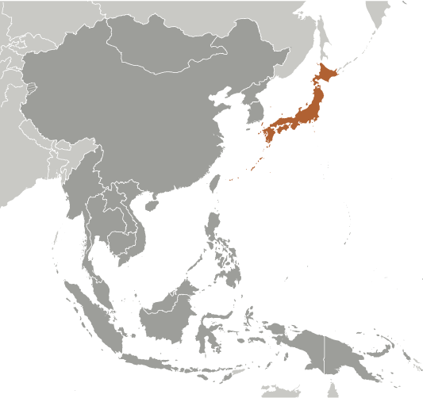
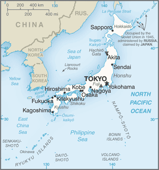
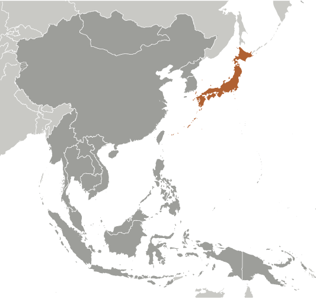
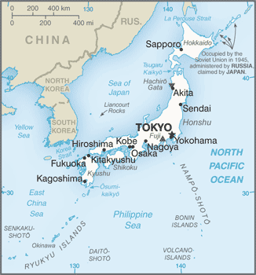

East & Southeast Asia :: JAPAN
Introduction :: JAPAN
-
In 1603, after decades of civil warfare, the Tokugawa shogunate (a military-led, dynastic government) ushered in a long period of relative political stability and isolation from foreign influence. For more than two centuries this policy enabled Japan to enjoy a flowering of its indigenous culture. Japan opened its ports after signing the Treaty of Kanagawa with the US in 1854 and began to intensively modernize and industrialize. During the late 19th and early 20th centuries, Japan became a regional power that was able to defeat the forces of both China and Russia. It occupied Korea, Formosa (Taiwan), and southern Sakhalin Island. In 1931-32 Japan occupied Manchuria, and in 1937 it launched a full-scale invasion of China. Japan attacked US forces in 1941 - triggering America's entry into World War II - and soon occupied much of East and Southeast Asia. After its defeat in World War II, Japan recovered to become an economic power and an ally of the US. While the emperor retains his throne as a symbol of national unity, elected politicians hold actual decision-making power. Following three decades of unprecedented growth, Japan's economy experienced a major slowdown starting in the 1990s, but the country remains an economic power. In March 2011, Japan's strongest-ever earthquake, and an accompanying tsunami, devastated the northeast part of Honshu island, killed thousands, and damaged several nuclear power plants. The catastrophe hobbled the country's economy and its energy infrastructure, and tested its ability to deal with humanitarian disasters. Prime Minister Shinzo ABE was reelected to office in December 2012, and has since embarked on ambitious economic and security reforms to improve Japan's economy and bolster the country's international standing.
Geography :: JAPAN
-
Eastern Asia, island chain between the North Pacific Ocean and the Sea of Japan, east of the Korean Peninsula36 00 N, 138 00 EAsiatotal: 377,915 sq kmland: 364,485 sq kmwater: 13,430 sq kmnote: includes Bonin Islands (Ogasawara-gunto), Daito-shoto, Minami-jima, Okino-tori-shima, Ryukyu Islands (Nansei-shoto), and Volcano Islands (Kazan-retto)country comparison to the world: 63slightly smaller than California0 km29,751 kmterritorial sea: 12 nm; between 3 nm and 12 nm in the international straits - La Perouse or Soya, Tsugaru, Osumi, and Eastern and Western Channels of the Korea or Tsushima Straitcontiguous zone: 24 nmexclusive economic zone: 200 nmvaries from tropical in south to cool temperate in northmostly rugged and mountainousmean elevation: 438 melevation extremes: lowest point: Hachiro-gata -4 mhighest point: Mount Fuji 3,776 mnegligible mineral resources, fishnote: with virtually no natural energy resources, Japan is the world's largest importer of coal and liquefied natural gas, as well as the second largest importer of oilagricultural land: 12.5%arable land 11.7%; permanent crops 0.8%; permanent pasture 0%forest: 68.5%other: 19% (2011 est.)24,690 sq km (2012)all primary and secondary regions of high population density lie on the coast; one-third of the population resides in and around Tokyo on the central plain (Kanto Plain)many dormant and some active volcanoes; about 1,500 seismic occurrences (mostly tremors but occasional severe earthquakes) every year; tsunamis; typhoonsvolcanism: both Unzen (1,500 m) and Sakura-jima (1,117 m), which lies near the densely populated city of Kagoshima, have been deemed Decade Volcanoes by the International Association of Volcanology and Chemistry of the Earth's Interior, worthy of study due to their explosive history and close proximity to human populations; other notable historically active volcanoes include Asama, Honshu Island's most active volcano, Aso, Bandai, Fuji, Iwo-Jima, Kikai, Kirishima, Komaga-take, Oshima, Suwanosejima, Tokachi, Yake-dake, and Usuair pollution from power plant emissions results in acid rain; acidification of lakes and reservoirs degrading water quality and threatening aquatic life; Japan is one of the largest consumers of fish and tropical timber, contributing to the depletion of these resources in Asia and elsewhere; following the 2011 Fukushima nuclear disaster, Japan originally planned to phase out nuclear power, but it has now implemented a new policy of seeking to restart nuclear power plants that meet strict new safety standardsparty to: Antarctic-Environmental Protocol, Antarctic-Marine Living Resources, Antarctic Seals, Antarctic Treaty, Biodiversity, Climate Change, Climate Change-Kyoto Protocol, Desertification, Endangered Species, Environmental Modification, Hazardous Wastes, Law of the Sea, Marine Dumping, Ozone Layer Protection, Ship Pollution, Tropical Timber 83, Tropical Timber 94, Wetlands, Whalingsigned, but not ratified: none of the selected agreementsstrategic location in northeast Asia; composed of four main islands - from north Hokkaido, Honshu, Shikoku, and Kyushu (the "Home Islands") - and 6,848 smaller islands and islets
People and Society :: JAPAN
-
126,451,398 (July 2017 est.)country comparison to the world: 10noun: Japanese (singular and plural)adjective: JapaneseJapanese 98.5%, Koreans 0.5%, Chinese 0.4%, other 0.6%note: up to 230,000 Brazilians of Japanese origin migrated to Japan in the 1990s to work in industries; some have returned to Brazil (2004)JapaneseShintoism 79.2%, Buddhism 66.8%, Christianity 1.5%, other 7.1%note: total adherents exceeds 100% because many people practice both Shintoism and Buddhism (2012 est.)0-14 years: 12.84% (male 8,361,611/female 7,875,045)15-24 years: 9.64% (male 6,417,085/female 5,778,904)25-54 years: 37.5% (male 23,435,323/female 23,980,781)55-64 years: 12.15% (male 7,692,424/female 7,665,157)65 years and over: 27.87% (male 15,397,309/female 19,847,759) (2017 est.)total dependency ratio: 64youth dependency ratio: 21.3elderly dependency ratio: 42.7potential support ratio: 2.3 (2015 est.)total: 47.3 yearsmale: 46 yearsfemale: 48.7 years (2017 est.)country comparison to the world: 2-0.21% (2017 est.)country comparison to the world: 2087.7 births/1,000 population (2017 est.)country comparison to the world: 2239.8 deaths/1,000 population (2017 est.)country comparison to the world: 450 migrant(s)/1,000 population (2017 est.)country comparison to the world: 85all primary and secondary regions of high population density lie on the coast; one-third of the population resides in and around Tokyo on the central plain (Kanto Plain)urban population: 94.3% of total population (2017)rate of urbanization: 0.15% annual rate of change (2015-20 est.)TOKYO (capital) 38.001 million; Osaka-Kobe 20.238 million; Nagoya 9.406 million; Kitakyushu-Fukuoka 5.51 million; Shizuoka-Hamamatsu 3.369 million; Sapporo 2.571 million (2015)at birth: 1.06 male(s)/female0-14 years: 1.06 male(s)/female15-24 years: 1.11 male(s)/female25-54 years: 0.98 male(s)/female55-64 years: 1 male(s)/female65 years and over: 0.77 male(s)/femaletotal population: 0.94 male(s)/female (2016 est.)30.7 years (2015 est.)5 deaths/100,000 live births (2015 est.)country comparison to the world: 171total: 2 deaths/1,000 live birthsmale: 2.2 deaths/1,000 live birthsfemale: 1.8 deaths/1,000 live births (2017 est.)country comparison to the world: 224total population: 85.3 yearsmale: 81.9 yearsfemale: 88.8 years (2017 est.)country comparison to the world: 21.41 children born/woman (2017 est.)country comparison to the world: 20940.4%note: percent of women aged 20-49 (2015)10.2% of GDP (2014)country comparison to the world: 232.3 physicians/1,000 population (2012)13.7 beds/1,000 population (2009)improved:urban: 100% of populationrural: 100% of populationtotal: 100% of populationunimproved:urban: 0% of populationrural: 0% of populationtotal: 0% of population (2015 est.)improved:urban: 100% of populationrural: 100% of populationtotal: 100% of populationunimproved:urban: 0% of populationrural: 0% of populationtotal: 0% of population (2015 est.)NANANA4.3% (2016)country comparison to the world: 1863.4% (2010)3.8% of GDP (2014)country comparison to the world: 115total: 15 yearsmale: 15 yearsfemale: 15 years (2014)total: 5.1%male: 5.7%female: 4.5% (2016 est.)country comparison to the world: 114
Government :: JAPAN
-
conventional long form: noneconventional short form: Japanlocal long form: Nihon-koku/Nippon-kokulocal short form: Nihon/Nipponetymology: the English word for Japan comes via the Chinese name for the country "Cipangu"; both Nihon and Nippon mean "where the sun originates" and are frequently translated as "Land of the Rising Sun"parliamentary constitutional monarchyname: Tokyogeographic coordinates: 35 41 N, 139 45 Etime difference: UTC+9 (14 hours ahead of Washington, DC, during Standard Time)47 prefectures; Aichi, Akita, Aomori, Chiba, Ehime, Fukui, Fukuoka, Fukushima, Gifu, Gunma, Hiroshima, Hokkaido, Hyogo, Ibaraki, Ishikawa, Iwate, Kagawa, Kagoshima, Kanagawa, Kochi, Kumamoto, Kyoto, Mie, Miyagi, Miyazaki, Nagano, Nagasaki, Nara, Niigata, Oita, Okayama, Okinawa, Osaka, Saga, Saitama, Shiga, Shimane, Shizuoka, Tochigi, Tokushima, Tokyo, Tottori, Toyama, Wakayama, Yamagata, Yamaguchi, Yamanashi3 May 1947 (current constitution adopted as amendment to Meiji Constitution); notable earlier dates: 660 B.C. (traditional date of the founding of the nation by Emperor JIMMU); 29 November 1890 (Meiji Constitution provides for constitutional monarchy)Birthday of Emperor AKIHITO, 23 December (1933); note - celebrates the birthday of the current emperorprevious 1890; latest approved 6 October 1946, adopted 3 November 1946, effective 3 May 1947; note - the constitution has not been amended since its enactment in 1947 (2016)civil law system based on German model; system also reflects Anglo-American influence and Japanese traditions; judicial review of legislative acts in the Supreme Courtaccepts compulsory ICJ jurisdiction with reservations; accepts ICCt jurisdictioncitizenship by birth: nocitizenship by descent only: at least one parent must be a citizen of Japandual citizenship recognized: noresidency requirement for naturalization: 5 years18 years of age; universalchief of state: Emperor AKIHITO (since 7 January 1989)head of government: Prime Minister Shinzo ABE (since 26 December 2012); Deputy Prime Minister Taro ASO (since 26 December 2012)cabinet: Cabinet appointed by the prime ministerelections/appointments: the monarchy is hereditary; the leader of the majority party or majority coalition in the House of Representatives usually becomes prime ministerdescription: bicameral Diet or Kokkai consists of the House of Councillors or Sangi-in (242 seats; 146 members directly elected in multi-seat districts by simple majority vote and 96 directly elected in a single national constituency by proportional representation vote; members serve 6-year terms with half the membership renewed every 3 years) and the House of Representatives or Shugi-in (475 seats; 295 members directly elected in single-seat districts by simple majority vote and 180 directly elected in multi-seat districts by party-list proportional representation vote; members serve 4-year terms); note - Japan's amended electoral law, changed in May 2017, reduced the total number of House seats to 465 - the number of House of Representatives seats in single-seat districts is reduced to 289 and the number of House of Representatives seats in multi-seat districts reduced to 176; the change is effective for the December 2018 House of Representatives electionnote: the Diet in June 2017 enacted a law - effective in mid-July - that redraws Japan's electoral district boundaries and reduces the current 275 seats in the House of Representatives to 265; the new law, which cuts 6 seats in single-seat districts and 4 in multi-seat districts, is reportedly intended to reduce voting disparities between densely and sparsely populated voting districts; this law will apply to the next electionelections: House of Councillors - last held on 10 July 2016 (next to be held in July 2019); House of Representatives - last held on 22 October 2017 (next to be held by 22 October 2021)election results: House of Councillors - percent of vote by party - NA; seats by party - LDP 55, DP 32, Komeito 14, JCP 6, Osaka Ishin no Kai (Initiatives from Osaka) 7, PLPTYF 1, SDP 1, independent 5House of Representatives - percent of vote by party - NA; seats by party - LDP 284, CDP 55, New Hope 50, Komeito 29, JCP 12, JIP 11, SDP 2, independents 22highest court(s): Supreme Court or Saiko saibansho (consists of the chief justice and 14 associate justices); note - the Supreme Court has jurisdiction in constitutional issuesjudge selection and term of office: Supreme Court chief justice designated by the Cabinet and appointed by the monarch; associate justices appointed by the Cabinet and confirmed by the monarch; all justices are reviewed in a popular referendum at the first general election of the House of Representatives following each judge's appointment and every 10 years afterwardsubordinate courts: 8 High Courts (Koto-saiban-sho), each with a Family Court (Katei-saiban-sho); 50 District Courts (Chiho saibansho), with 203 additional branches; 438 Summary Courts (Kani saibansho)Constitutional Democratic Party of Japan or CDP [Yukio EDANO]Democratic Party of Japan or DPJ [Kohei OTSUKA]Group of Reformists [Sakihito OZAWA]Japan Communist Party or JCP [Kazuo SHII]Japan Innovation Party or JIP [Ichiro MATSUI]Kibo no To or New Hope [Yuriko KOIKE]Komeito [Natsuo YAMAGUCHI]Liberal Democratic Party or LDP [Shinzo ABE]Liberal Party [Ichiro OZAWA] (formerly People's Life Party & Taro Yamamoto and Friends or PLPTYF)New Renaissance Party [Hiroyuki ARAI]Party for Japanese Kokoro or PJK [Masashi NAKANO]Social Democratic Party or SDP [Tadatomo YOSHIDA]The Assembly to Energize Japan and the Independents [Kota MATSUDA]other: business groups; trade unionsADB, AfDB (nonregional member), APEC, Arctic Council (observer), ARF, ASEAN (dialogue partner), Australia Group, BIS, CD, CE (observer), CERN (observer), CICA (observer), CP, CPLP (associate), EAS, EBRD, EITI (implementing country), FAO, FATF, G-5, G-7, G-8, G-10, G-20, IADB, IAEA, IBRD, ICAO, ICC (national committees), ICCt, ICRM, IDA, IEA, IFAD, IFC, IFRCS, IGAD (partners), IHO, ILO, IMF, IMO, IMSO, Interpol, IOC, IOM, IPU, ISO, ITSO, ITU, ITUC (NGOs), LAIA (observer), MIGA, NEA, NSG, OAS (observer), OECD, OPCW, OSCE (partner), Pacific Alliance (observer), Paris Club, PCA, PIF (partner), SAARC (observer), SELEC (observer), SICA (observer), UN, UN Security Council (temporary), UNCTAD, UNESCO, UNHCR, UNIDO, UNMISS, UNRWA, UNWTO, UPU, WCO, WFTU (NGOs), WHO, WIPO, WMO, WTO, ZCchief of mission: Ambassador Kenichiro SASAE (since 14 January 2013)chancery: 2520 Massachusetts Avenue NW, Washington, DC 20008telephone: [1] (202) 238-6700FAX: [1] (202) 328-2187consulate(s) general: Anchorage (AK), Atlanta, Boston, Chicago, Dallas, Denver (CO), Detroit (MI), Honolulu (HI), Houston, Las Vegas (NV), Los Angeles, Miami, Nashville (TN), New Orleans, New York, Oklahoma City (OK), Orlando (FL), Philadelphia (PA), Phoenix (AZ), Portland (OR), San Francisco, Seattle, Saipan (Puerto Rico), Tamuning (Guam)chief of mission: Ambassador William F. "Bill" HAGERTY, IV (since 31 August 2017)embassy: 1-10-5 Akasaka, Minato-ku, Tokyo 107-8420mailing address: Unit 9800, Box 300, APO AP 96303-0300telephone: [81] (03) 3224-5000FAX: [81] (03) 3505-1862consulate(s) general: Naha (Okinawa), Osaka-Kobe, Sapporoconsulate(s): Fukuoka, Nagoyawhite with a large red disk (representing the sun without rays) in the centerred sun disc, chrysanthemum; national colors: red, whitename: "Kimigayo" (The Emperor"s Reign)lyrics/music: unknown/Hiromori HAYASHInote: adopted 1999; unofficial national anthem since 1883; oldest anthem lyrics in the world, dating to the 10th century or earlier; there is some opposition to the anthem because of its association with militarism and worship of the emperor
Economy :: JAPAN
-
Over the past 70 years, government-industry cooperation, a strong work ethic, mastery of high technology, and a comparatively small defense allocation (slightly less than 1% of GDP) have helped Japan develop an advanced economy. Two notable characteristics of the post-World War II economy were the close interlocking structures of manufacturers, suppliers, and distributors, known as keiretsu, and the guarantee of lifetime employment for a substantial portion of the urban labor force. Both features have significantly eroded under the dual pressures of global competition and domestic demographic change.Measured on a purchasing power parity basis that adjusts for price differences, Japan in 2016 stood as the fourth-largest economy in the world after first-place China, which surpassed Japan in 2001, and third-place India, which edged out Japan in 2012. For three postwar decades, overall real economic growth was impressive - a 10% average in the 1960s, 5% in the 1970s, and 4% in the 1980s. Growth slowed markedly in the 1990s, averaging just 1.7%, largely because of the aftereffects of inefficient investment and the collapse of an asset price bubble in the late 1980s, which entailed considerable time for firms to reduce excess debt, capital, and labor. Modest economic growth continued after 2000, but the economy has fallen into recession four times since 2008.Japan enjoyed an uptick in growth in 2013 on the basis of Prime Minister Shinzo ABE’s “Three Arrows” economic revitalization agenda - dubbed “Abenomics” - of monetary easing, “flexible” fiscal policy, and structural reform. Led by the Bank of Japan’s aggressive monetary easing, Japan is making modest progress in ending deflation, but demographic decline – a low birthrate and an aging, shrinking population – poses a major long-term challenge for the economy. The government currently faces the quandary of balancing its efforts to stimulate growth and institute economic reforms with the necessity of addressing its sizable public debt, which stands at 235% of GDP. To help raise government revenue, Japan adopted legislation in 2012 to gradually raise the consumption tax rate. However, the first such increase, in April 2014, led to another recession, so Prime Minister ABE has twice postponed the next increase, now scheduled for October 2019. Structural reforms to unlock productivity are seen as central to strengthening the economy in the long-run.Scarce in critical natural resources, Japan has long been dependent on imported energy and raw materials. After the complete shutdown of Japan’s nuclear reactors following the earthquake and tsunami disaster in 2011, Japan's industrial sector has become even more dependent than before on imported fossil fuels. However, ABE’s government is seeking to restart nuclear power plants that meet strict new safety standards and is emphasizing nuclear energy’s importance as a base-load electricity source. In August 2015, Japan successfully restarted one nuclear reactor at the Sendai Nuclear Power Plant in Kagoshima prefecture, and several other reactors around the country have since resumed operations; however, opposition from local governments has delayed several more restarts that remain pending. Reforms of the electricity and gas sectors, including full liberalization of Japan’s energy market in April 2016 and gas market in April 2017, constitute an important part of Prime Minister Abe’s economic program.In October 2015, Japan and 11 trading partners reached agreement on the Trans-Pacific Partnership (TPP), a pact that had promised to open Japan's economy to increased foreign competition and create new export opportunities for Japanese businesses. Japan was the second country to ratify the TPP in December 2016; the United States signaled its withdrawal from the TPP on January 23, 2017, and as of April 2017 the agreement has not gone into effect.$5.233 trillion (2016 est.)$5.115 trillion (2015 est.)$5.004 trillion (2014 est.)note: data are in 2016 dollarscountry comparison to the world: 5$4.937 trillion (2016 est.)1% (2016 est.)1.1% (2015 est.)0.3% (2014 est.)country comparison to the world: 174$41,200 (2016 est.)$40,800 (2015 est.)$40,300 (2014 est.)note: data are in 2016 dollarscountry comparison to the world: 4227.2% of GDP (2016 est.)27% of GDP (2015 est.)24.6% of GDP (2014 est.)country comparison to the world: 40household consumption: 55.9%government consumption: 19.8%investment in fixed capital: 23.1%investment in inventories: 0.2%exports of goods and services: 16.1%imports of goods and services: -15.2% (2016 est.)agriculture: 1.1%industry: 29.6%services: 69.4% (2016 est.)vegetables, rice, fish, poultry, fruit, dairy products, pork, beef, flowers, potatoes/taros/yams, sugarcane, tea, legumes, wheat and barleyamong world's largest and most technologically advanced producers of motor vehicles, electronic equipment, machine tools, steel and nonferrous metals, ships, chemicals, textiles, processed foods1.2% (2016 est.)country comparison to the world: 13866.73 million (2016 est.)country comparison to the world: 9agriculture: 2.9%industry: 26.2%services: 70.9% (February 2015 est)3.1% (2016 est.)3.4% (2015 est.)country comparison to the world: 3216.1% (2013 est.)lowest 10%: 2.7%highest 10%: 24.8% (2008)37.9 (2011)24.9 (1993)country comparison to the world: 73revenues: $1.684 trillionexpenditures: $1.909 trillion (2016 est.)34.1% of GDP (2016 est.)country comparison to the world: 62-4.6% of GDP (2016 est.)country comparison to the world: 152222.2% of GDP (2016 est.)219.3% of GDP (2015 est.)country comparison to the world: 11 April - 31 March-0.1% (2016 est.)0.8% (2015 est.)country comparison to the world: 470.3% (31 December 2015)0.3% (31 December 2014)country comparison to the world: 1341.48% (31 December 2016 est.)1.48% (31 December 2015 est.)country comparison to the world: 184$5.651 trillion (31 December 2016 est.)$5.126 trillion (31 December 2015 est.)country comparison to the world: 3$8.023 trillion (31 December 2016 est.)$7.537 trillion (31 December 2015 est.)country comparison to the world: 4$12.11 trillion (31 December 2016 est.)$11.17 trillion (31 December 2015 est.)country comparison to the world: 4$4.895 trillion (31 December 2015 est.)$4.378 trillion (31 December 2014 est.)$4.543 trillion (31 December 2013 est.)country comparison to the world: 4$188.1 billion (2016 est.)$134.1 billion (2015 est.)country comparison to the world: 4$634.9 billion (2016 est.)$622 billion (2015 est.)country comparison to the world: 5motor vehicles 14.9%; iron and steel products 5.4%; semiconductors 5%; auto parts 4.8%; power generating machinery 3.5%; plastic materials 3.3% (2014 est.)US 20.2%, China 17.7%, South Korea 7.2%, Hong Kong 5.2%, Thailand 4.3% (2016)$583.5 billion (2016 est.)$629.4 billion (2015 est.)country comparison to the world: 6petroleum 16.1%; liquid natural gas 9.1%; clothing 3.8%; semiconductors 3.3%; coal 2.4%; audio and visual apparatus 1.4% (2014 est.)China 25.8%, US 11.4%, Australia 5%, South Korea 4.1% (2016)$1.217 trillion (31 December 2016 est.)$1.233 trillion (31 December 2015 est.)country comparison to the world: 2$3.24 trillion (31 March 2016 est.)$2.83 trillion (31 March 2015 est.)country comparison to the world: 8$238.4 billion (31 December 2016 est.)$205.6 billion (31 December 2015 est.)country comparison to the world: 25$1.363 trillion (31 December 2016 est.)$1.26 trillion (31 December 2015 est.)country comparison to the world: 10yen (JPY) per US dollar -108.76 (2016 est.)108.76 (2015 est.)121.02 (2014 est.)97.44 (2013 est.)79.79 (2012 est.)
Energy :: JAPAN
-
electrification - total population: 100% (2016)976.3 billion kWh (2015 est.)country comparison to the world: 6933.6 billion kWh (2015 est.)country comparison to the world: 50 kWh (2016 est.)country comparison to the world: 1520 kWh (2016 est.)country comparison to the world: 163322.2 million kW (2015 est.)country comparison to the world: 459.5% of total installed capacity (2015 est.)country comparison to the world: 13012.5% of total installed capacity (2015 est.)country comparison to the world: 147% of total installed capacity (2015 est.)country comparison to the world: 12615% of total installed capacity (2015 est.)country comparison to the world: 483,918 bbl/day (2016 est.)country comparison to the world: 840 bbl/day (2016 est.)country comparison to the world: 1423.181 million bbl/day (2016 est.)country comparison to the world: 444.12 million bbl (1 January 2017 es)country comparison to the world: 803.536 million bbl/day (2016 est.)country comparison to the world: 64.026 million bbl/day (2016 est.)country comparison to the world: 5381,100 bbl/day (2016 est.)country comparison to the world: 211.141 million bbl/day (2016 est.)country comparison to the world: 54.453 billion cu m (2015 est.)country comparison to the world: 53123.6 billion cu m (2015 est.)country comparison to the world: 100 cu m (2014 est.)country comparison to the world: 125114.7 billion cu m (2015 est.)country comparison to the world: 220.9 billion cu m (1 January 2017 es)country comparison to the world: 761.257 billion Mt (2013 est.)country comparison to the world: 6
Communications :: JAPAN
-
total subscriptions: 64,024,938subscriptions per 100 inhabitants: 51 (July 2016 est.)country comparison to the world: 4total: 164,265,142subscriptions per 100 inhabitants: 130 (July 2016 est.)country comparison to the world: 8general assessment: excellent domestic and international servicedomestic: high level of modern technology and excellent service of every kindinternational: country code - 81; numerous submarine cables provide links throughout Asia, Australia, the Middle East, Europe, and US; satellite earth stations - 7 Intelsat (Pacific and Indian Oceans), 1 Intersputnik (Indian Ocean region), 2 Inmarsat (Pacific and Indian Ocean regions), and 8 SkyPerfect JSAT (2012)a mixture of public and commercial broadcast TV and radio stations; 6 national terrestrial TV networks including 1 public broadcaster; the large number of radio and TV stations available provide a wide range of choices; satellite and cable services provide access to international channels (2012).jptotal: 116,565,962percent of population: 92.0% (July 2016 est.)country comparison to the world: 5
Transportation :: JAPAN
-
number of registered air carriers: 23inventory of registered aircraft operated by air carriers: 627annual passenger traffic on registered air carriers: 113.762 millionannual freight traffic on registered air carriers: 8,868.745 million mt-km (2015)JA (2016)175 (2013)country comparison to the world: 33total: 142over 3,047 m: 62,438 to 3,047 m: 451,524 to 2,437 m: 38914 to 1,523 m: 28under 914 m: 25 (2017)total: 33914 to 1,523 m: 5under 914 m: 28 (2013)16 (2013)gas 4,456 km; oil 174 km; oil/gas/water 104 km (2013)total: 27,311 kmstandard gauge: 4,800 km 1.435-m gauge (4,800 km electrified)dual gauge: 132 km 1.435-1.067-m gauge (132 km electrified)narrow gauge: 124 km 1.372-m gauge (124 km electrified); 22,207 km 1.067-m gauge (15,430 km electrified); 48 km 0.762-m gauge (48 km electrified) (2015)country comparison to the world: 11total: 1,218,772 kmpaved: 992,835 km (includes 8,428 km of expressways)unpaved: 225,937 km (2015)country comparison to the world: 61,770 km (seagoing vessels use inland seas) (2010)country comparison to the world: 44total: 684by type: bulk carrier 168, cargo 34, carrier 3, chemical tanker 29, container 2, liquefied gas 58, passenger 11, passenger/cargo 117, petroleum tanker 152, refrigerated cargo 4, roll on/roll off 52, vehicle carrier 54registered in other countries: 3,122 (Bahamas 88, Bermuda 2, Burma 1, Cambodia 1, Cayman Islands 23, China 2, Cyprus 16, Honduras 4, Hong Kong 79, Indonesia 8, Isle of Man 19, Liberia 110, Luxembourg 3, Malaysia 2, Malta 5, Marshall Islands 59, Mongolia 2, Netherlands 1, Panama 2372, Philippines 77, Portugal 9, Saint Kitts and Nevis 2, Saint Vincent and the Grenadines 3, Sierra Leone 4, Singapore 164, South Korea 14, Tanzania 1, UK 5, Vanuatu 39, unknown 7) (2010)country comparison to the world: 16major seaport(s): Chiba, Kawasaki, Kobe, Mizushima, Moji, Nagoya, Osaka, Tokyo, Tomakomai, Yokohamacontainer port(s) (TEUs): Kobe (2,707,000), Nagoya (2,631,000), Osaka (1,970,000), Tokyo (4,150,000), Yokohama (2,787,000) (2015)LNG terminal(s) (import): Chita, Fukwoke, Futtsu, Hachinone, Hakodate, Hatsukaichi, Higashi Ohgishima, Higashi Niigata, Himeiji, Joetsu, Kagoshima, Kawagoe, Kita Kyushu, Mizushima, Nagasaki, Naoetsu, Negishi, Ohgishima, Oita, Sakai, Sakaide, Senboku, Shimizu, Shin Minato, Sodegaura, Tobata, Yanai, Yokkaichi; Okinawa - Nakagusuku
Military and Security :: JAPAN
-
0.93% of GDP (2016)0.94% of GDP (2015)0.96% of GDP (2014)0.95% of GDP (2013)0.97% of GDP (2012)country comparison to the world: 102Japanese Ministry of Defense (MOD): Ground Self-Defense Force (Rikujou Jieitai, GSDF), Maritime Self-Defense Force (Kaijou Jieitai, MSDF), Air Self-Defense Force (Koukuu Jieitai, ASDF) (2011)18 years of age for voluntary military service; no conscription; mandatory retirement at age 53 for senior enlisted personnel and at 62 years for senior service officers (2012)
Transnational Issues :: JAPAN
-
the sovereignty dispute over the islands of Etorofu, Kunashiri, and Shikotan, and the Habomai group, known in Japan as the "Northern Territories" and in Russia as the "Southern Kuril Islands," occupied by the Soviet Union in 1945, now administered by Russia and claimed by Japan, remains the primary sticking point to signing a peace treaty formally ending World War II hostilities; Japan and South Korea claim Liancourt Rocks (Take-shima/Tok-do) occupied by South Korea since 1954; the Japanese-administered Senkaku Islands are also claimed by China and Taiwanstateless persons: 626 (2016)